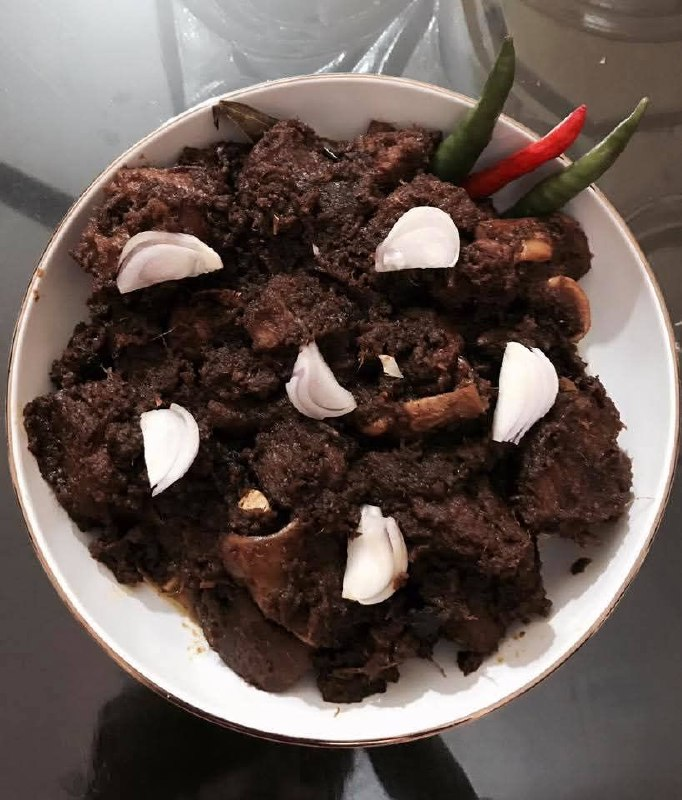

Beef Kala Bhuna
A rich and aromatic Bangladeshi beef dish slow-cooked in spices until dark, flavorful, and tender. Perfect with steamed rice or paratha!
Ingredients
Instructions
- In a large bowl, mix beef with yogurt, ginger-garlic paste, turmeric, red chili, cumin, coriander powder, and salt. Marinate for at least 1 hour (overnight gives best flavor).
- Heat oil in a heavy-bottomed pan or wok. Add sliced onions and fry until deep golden brown.
- Add the marinated beef and stir well. Cook over medium-high heat until the meat starts to release its juices and the oil begins to separate.
- Lower the heat, cover, and cook slowly, stirring occasionally, until the beef is tender and the gravy turns dark brown (“kala bhuna” literally means “black-fried”).
- Add green chilies and garam masala at the end. Fry for another 5-10 minutes until the oil rises to the top.
- Serve hot with steamed rice, pulao, or paratha. Enjoy the authentic taste of Bangladesh!